Techniques in Botanical Art
Botanical art isn't limited to traditional drawings and paintings. Artists have used a variety of materials and techniques to represent flowers, plants, and other natural forms.
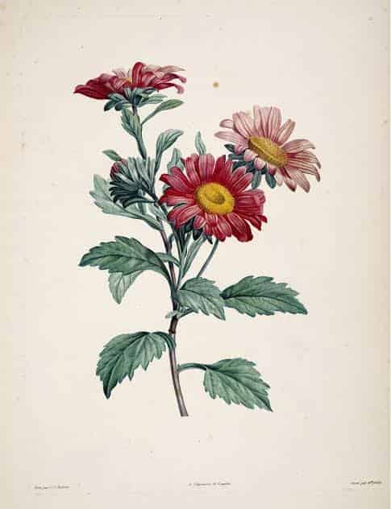
2D Techniques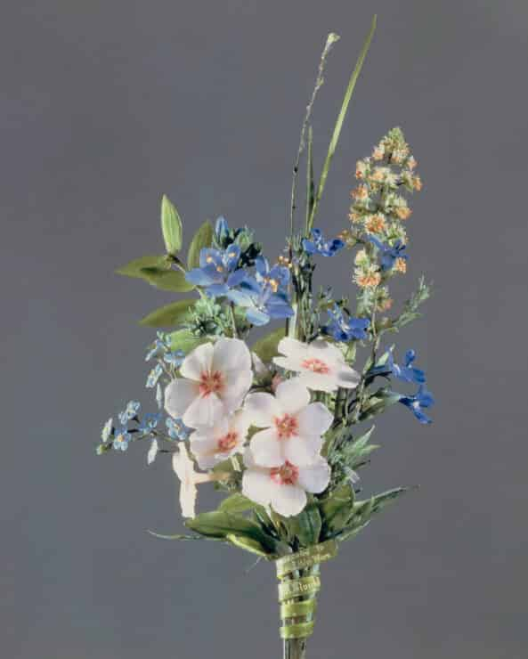
3D Techniques
Two-Dimensional Techniques
Two-dimensional botanical art includes artwork created on flat surfaces using different materials and methods.
-
Papercutting
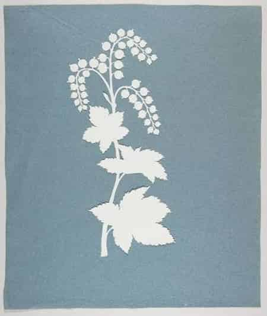
Artists cut and layer paper to create detailed plant and floral designs.
-
Collage
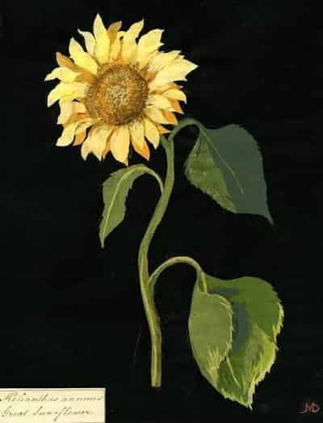
Small pieces of colored paper are arranged to form botanical images. Artist Mary Delany became known for her intricate paper collages of flowers and plants.
-
Cut-out Gouache
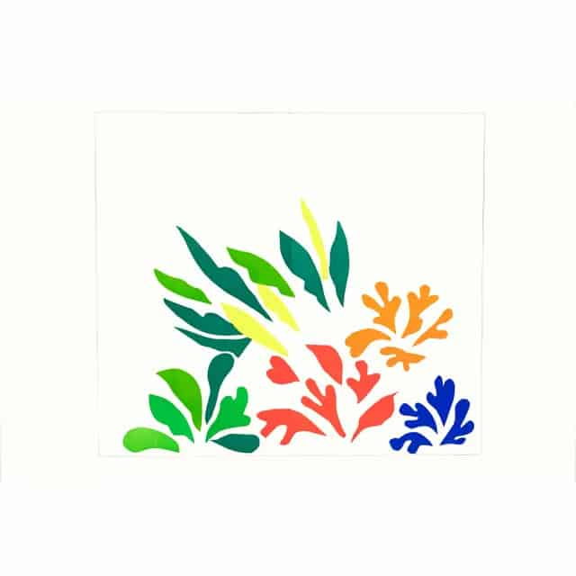
Artists paint shapes onto paper and cut them out to create colorful compositions. Henri Matisse used this technique in his later work.
-
Textile and Wallpaper Design
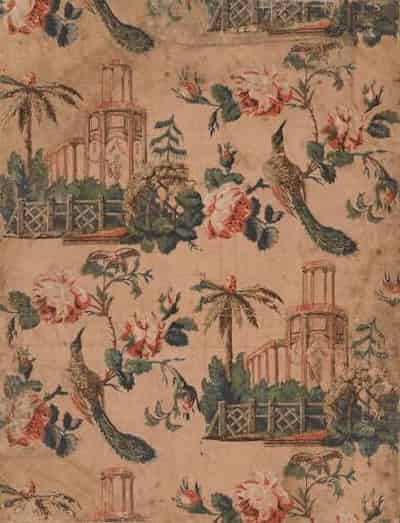
Artists incorporate detailed plant patterns into fabrics and wallpaper. William Morris was especially well known for his nature-inspired designs.
-
Ceramics
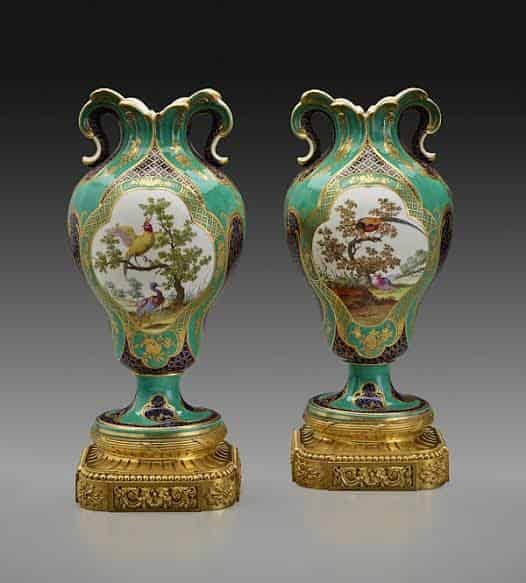
Flowers and botanical patterns are painted or printed onto ceramic objects, combining decorative art with careful observation of plants.
-
Floral Marquetry
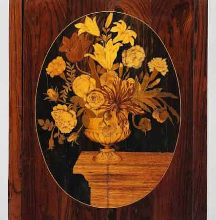
Small pieces of wood and other materials are fitted together to create detailed floral designs on furniture and decorative objects.
Three-Dimensional Techniques
Three-dimensional botanical art represents plants in physical forms that can be viewed from different angles.
-
Wax Sculptures
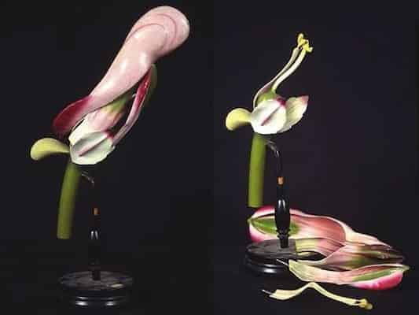
Artists use wax to create realistic models of flowers, fruits, and plants. Louis Marc Antoine Robillard d'Argentelle created a collection of 112 tropical wax models.
-
Papier-Mâché Models
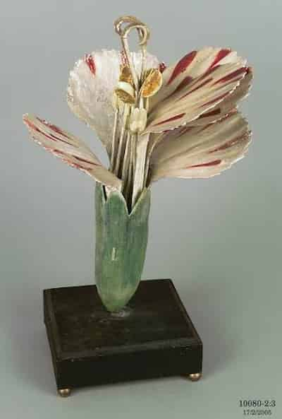
Paper-based materials are molded into plant structures, often to create educational models that demonstrate botanical features.
-
Glass Sculptures
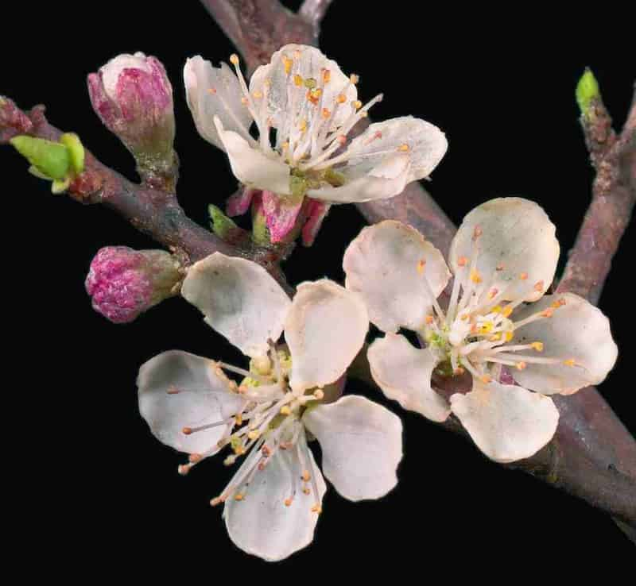
Glass is shaped into realistic representations of plants and flowers. The Blaschka glass flowers at Harvard University are famous examples of this technique.
-
Botanical Jewelry
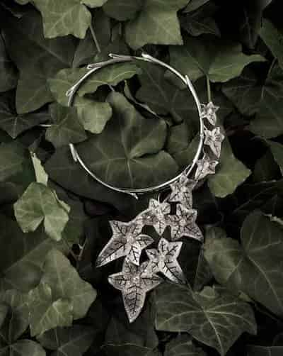
Flowers inspire jewelry designs that use detailed botanical studies to recreate natural shapes and patterns in precious materials.
These techniques show how botanical art has expanded beyond traditional illustration. Whether created through paper, paint, glass, or sculpture, each method offers a different way to capture the details and beauty of plants.